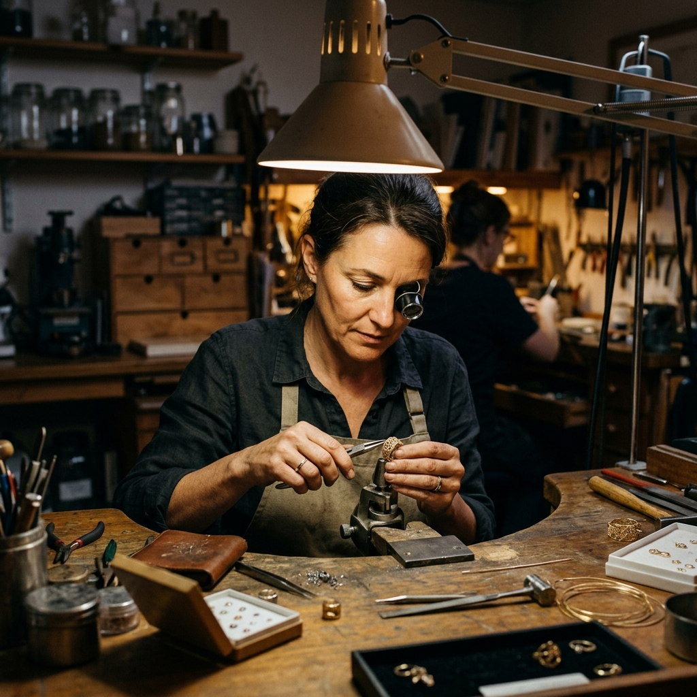

Founded on the principles of purity and perfection, Hope's Touch Jewelry has been handcrafting masterpieces for over three decades.
Our journey began in a small workshop with a single goal: to create jewelry that transcends time. Today, we are proud to be a global leader in ethical luxury.